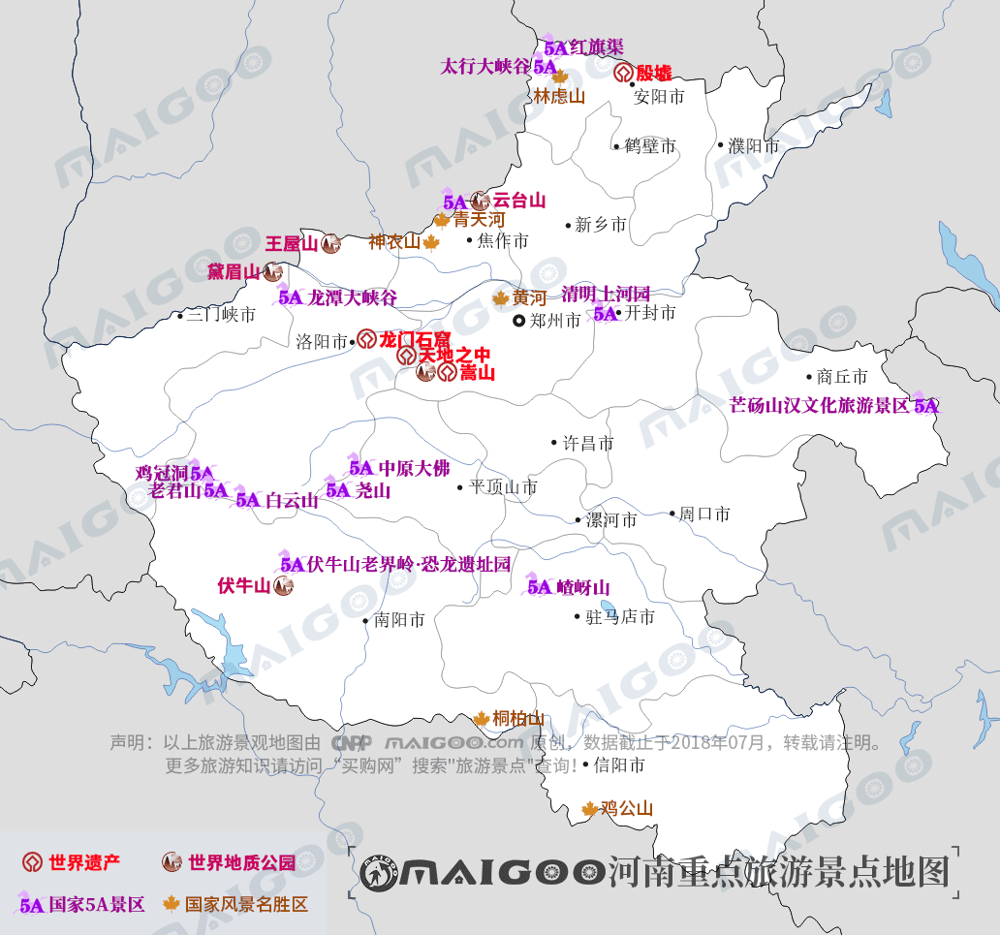

| | | | | |
| - | - | - | - | - |
|<b>别名</b>|中原、中州、中土、豫州||<b>著名景点</b>|少林寺、龙门石窟、殷墟、天地之中、嵩山、黄帝故里、白马寺等|
|<b>行政区类别</b>|省||<b>机 场</b>|郑州新郑国际机场、洛阳北郊机场、南阳姜营机场等|
|<b>所属地区</b>|中国华中||<b>火车站</b>|郑州站、郑州东站、商丘站、洛阳站、开封站、安阳站、南阳站等|
|<b>下辖地区</b>|17个地级市、1个省直管市、52个市辖区、20个县级市、85个县||<b>车牌代码</b>|豫A—豫U|
|<b>电话区号</b>|0370—0379、0391—0398||<b>GDP</b>|44988.16亿元（2017年）|
|<b>邮政区码</b>|450000—477100||<b>人均GDP</b>|47130.00元（2017年）|
|<b>地理位置</b>|中国中东部、黄河中下游||<b>省 花</b>|腊梅|
|<b>面 积</b>|16.7万平方千米||<b>省 树</b>|桂花树|
|<b>人 口</b>|9559.13万人（2017年）||<b>历史名人</b>|老子、庄子、杜甫、白居易等|
|<b>方 言</b>|中原官话||<b>高等学府</b>|郑州大学、河南大学等|
|<b>气候条件</b>|温带季风气候—亚热带季风气候||-|-|
| <b>河南生活文化</b> | <b>河南特色文化</b> | <b>河南曲艺文化</b> | <b>河南建筑文化</b> | <b>河南宗教文化</b> |
| - | - | - | - | - |
| <a href="javascript:;" onclick="live(this);">习俗/民俗</a> | <a href="javascript:;" onclick="feature(this);">开封斗鸡</a> | <a href="javascript:;" onclick="art(this);">河南豫剧</a> | <a href="javascript:;" onclick="building(this);">龙门石窟</a> | - |
| <a href="javascript:;" onclick="live(this);">方言文化</a> | <a href="javascript:;" onclick="feature(this);">中原文化</a> | <a href="javascript:;" onclick="art(this);">河南越调</a> | <a href="javascript:;" onclick="building(this);">红旗渠</a> | - |
| <a href="javascript:;" onclick="live(this);">节日文化</a> | - | - | <a href="javascript:;" onclick="building(this);">河南庙宇文化</a> | - |
| <a href="javascript:;" onclick="live(this);">嫁娶文化</a> | - | - |-|-|
| <a href="javascript:;" onclick="live(this);">饮食文化</a> | - | -|-|-|
| <a href="javascript:;" onclick="live(this);">河南禁忌</a> | - |-| -|-|
## <i class="fa fa-file-text-o"></i>&nbsp;目录（Table of Contents）
+ [I. 总路线图（暂无）](#one)
+ [II. 景点](#two)
+ [III. 路线规划（暂无）](#three)
<h2 id="two"><i class="fa fa-star-o"></i>&nbsp;景点</h2>
